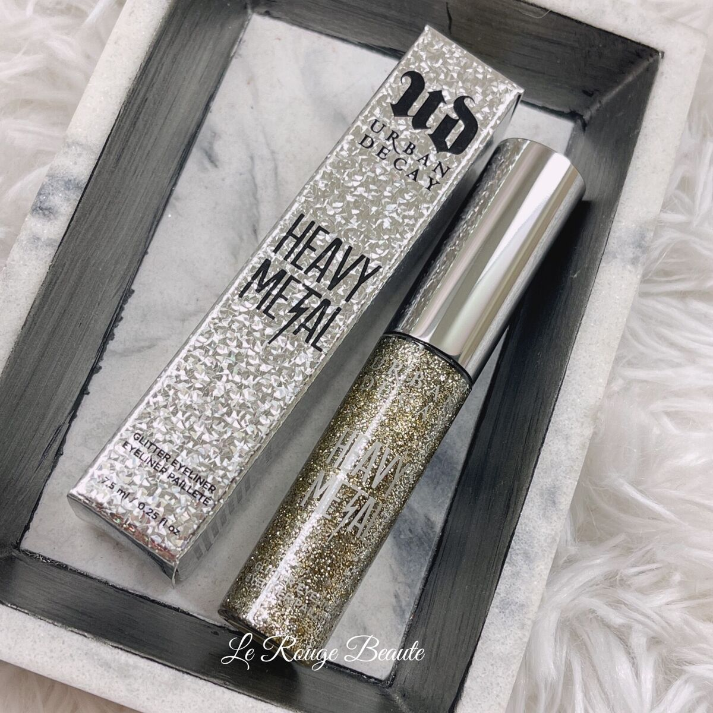

<html>
        <link href="https://cdn.jsdelivr.net/npm/bootstrap@5.0.2/dist/css/bootstrap.min.css"
        rel="stylesheet"
        integrity="sha384-EVSTQN3/azprG1Anm3QDgpJLIm9Nao0Yz1ztcQTwFspd3yD65VohhpuuCOmLASjC"
        crossorigin="anonymous">

        <script src="https://cdn.jsdelivr.net/npm/bootstrap@5.0.2/dist/js/bootstrap.bundle.min.js"
        integrity="sha384-MrcW6ZMFYlzcLA8Nl+NtUVF0sA7MsXsP1UyJoMp4YLEuNSfAP+JcXn/tWtIaxVXM"
        crossorigin="anonymous">
        </script>
</html>

<products>
    <html>
        <head>
            <meta charset="UTF-8">
            <meta name="viewport" content="width=device-width, initial-scale=1.0">
            <title>Makeup with Dhrithi</title>
            <style>
                body {
                    margin: 0;
                    font-family: Arial, sans-serif;
                }
                .header {
                    display: flex;
                    align-items: center;
                    background-color: rgb(207, 174, 235);
                    padding: 20px;
                }
                .header img {
                    width: 100px; /* Specify the desired width */
                    height: auto; /* Maintain aspect ratio */
                    border-radius: 50%; /* Optional: Circular crop for profile-like appearance */
                }
        
                .header h1, .header h2 {
                    margin: 0;
                }
                .header h1 {
                    color: rgb(141, 255, 158);
                    margin-left: 20px;
                }
                .header h2 {
                    margin-left: 20px;
                    color: rgb(68, 39, 94);
                }
                nav {
                    margin-top: 20px;
                    background-color: rgb(141, 255, 158);
                    display: flex;
                    justify-content: center;
                }
                nav ul {
                    list-style: none;
                    padding: 0;
                    margin: 0;
                    display: flex;
                    gap: 30px;
                    justify-content: center; 
                }
                nav li {
                    margin: 0;
                }
                nav a {
                    text-decoration: none;
                    color: rgb(68, 39, 94);
                    font-size: 18px;
                }
                nav a:hover {
                    text-decoration: underline;
                }
                h2 {
                    color: rgb(68, 39, 94);
                }
                h3 {
                    color: rgb(72, 130, 81);
                }
                img {
                    max-width: 100%;
                    height: auto;
                    display: block;
                    border-radius: 8px;
                }
                .small-image {
                    width: 200px; 
                    height: auto; 
                }
                .content {
                    display: flex;
                    flex-wrap: wrap;
                    gap: 20px;
                    padding: 20px;
                }
                .content > div {
                    flex: 1;
                    min-width: 300px;
                }
                .indented {
                    margin-left: 20px;
                    font-style: italic;
                }
                footer {
                    position: fixed;
                    bottom: 0;
                    width: 100%;
                    background-color: rgb(207, 174, 235);
                    text-align: center;
                    padding: 10px;
                    color: white;
                }
                .product {
                    display: flex; /* Align items side by side */
                    align-items: center; /* Vertically align items */
                    gap: 20px; /* Add space between the image and the text */
                }

                .product .small-image {
                    width: 300px; /* Adjust the image size */
                    height: auto;
                }

                .product p {
                    margin: 0; /* Remove default paragraph margin */
                }
            </style>
        </head>
        <div class="content">      
            <!-- Right Section: My Favorite Products -->
            <div>
                <h2>My Favorite Products!</h2>
                <div>
                    <h3>1. Soft Pinch Liquid Blush by Rare Beauty</h3>
                    <div class="product">
                        
                        <div>
                            <p>Rare Beauty's Liquid Blush became a fan favorite as soon as it hit the market. 
                                I personally love this product because of it's intense pigment that allows the product to last a lifetime. 
                                The product has quite a hefty cost but since it lasts an extremely long time, it's like your paying nothing at all!! 
                                This blush seemingly blends in with your skin providing a radiant glow to your cheek.
                                Additionally, this product's immense pigment allows for it to appear just as beautiful and flawless on darker skin tones.
                                I would certainly recommend this product for anyone looking to add a liquid blush to their makeup routine! 
                                Just remember when using this product, be sparing with the amount, wouldn't want to look like we're clowning around with our makeup!
                            </p>
                        </div>
                    </div>
                </div>
                
                <div>
                    <h3>2. Morphe X Avani Gregg Makeup Palette</h3>
                    <div class="product">
                        
                        <div>
                            <p>
                                This colorful and diverse makeup palette was one of the first makeup palettes I had. 
                                Avani Gregg's collaboration with Morphe with this palette is one of my favorite products because of one shade. 
                                Prior to my purchase of this palette, I had purchased another palette, which I shall not name. 
                                The palette had a yellow shade, which was my favorite color. 
                                I was extremely eager to use the eyeshadow shade, but I was soon disappointed when the color barely showed up on my skin. 
                                On the contrary, when I used the Avani Gregg palette, I was amazed by the beautiful shade and the immense pigment it had, allowing it to show on my skin.
                                Another thing, I truly enjoy about this palette, is the water-activated eye liners. In addition to the many eyeshadows, this palette includes water-activated eyeliners in various colors.
                            </p>
                        </div>
                    </div>
                </div>

                <div>
                    <h3>3. Urban Decay Glitter Eyeliner in Shade Midnight Cowboy</h3>\
                    <div class="product">
                        
                        <p>
                            This Urban Decay Glitter Eyeliner in shade, midnight cowboy, will certainly make people take notice! 
                            I have worn this eyeliner on many special occasions and it goes with any ouftit. 
                            I discovered this product at my aunt's house and she lent me it, and I am so thankful because I could not live without this product. 
                            It is not too bold but at the same time, stands out. In addition to this product's visual beauty, it is extremely easy to apply even if you are not the best at eyeliner. 
                            The thin applicator allows for extreme precision when applying your eyeliner.
                        </p>
                    </div>
                    <a href="P4.html">Return To Home</a>
                </div>
            </div>
        </div>
    </html>
</products>